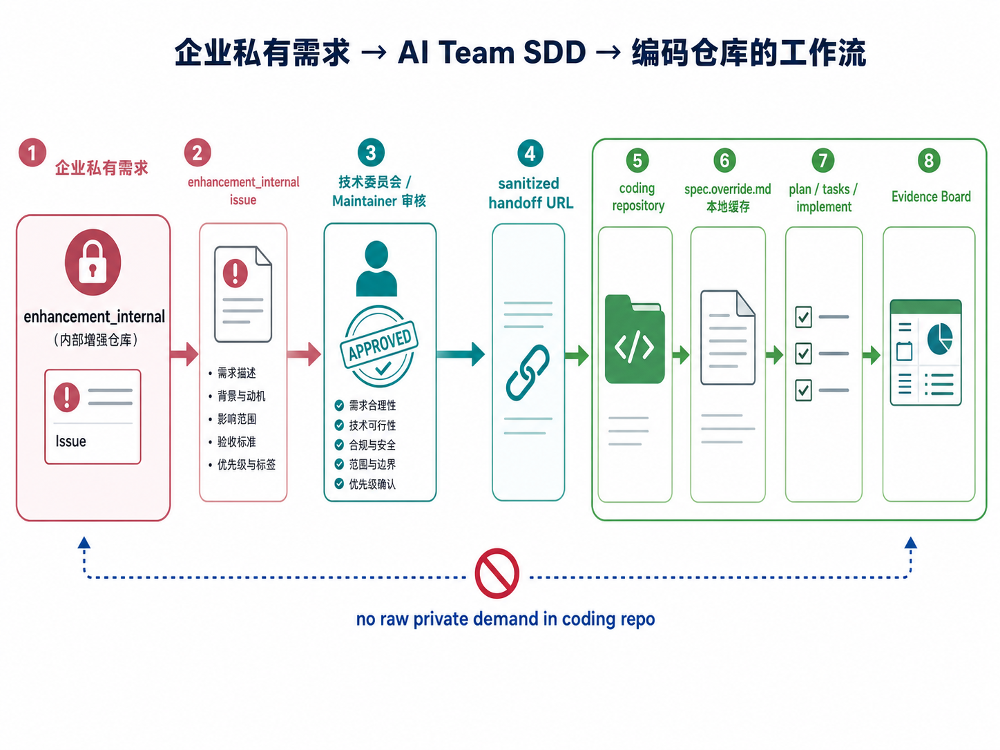

AI Coding 团队协作方式
这套材料解释：当一个团队用 AI 写代码时，怎样让需求说得清楚、代码改得稳、 结果能验证、出问题能追责和复盘。
让开发速度和理解速度一起提升
- 把重复的代码、测试、文档整理交给工具处理。
- 借助 Code Graph 和上下文包，更快读懂陌生代码。
- 把“需求 -> 计划 -> 任务 -> 实现 -> 证据”的链路缩短。
实现成本降低，协作风险上升
- 每个人都能用 AI 快速实现功能，也更容易绕过既有架构。
- 没有统一流程时，改动范围会失控，公共接口和配置语义被顺手修改。
- 不同人用不同工具时，可能没看全代码而重复造轮子；工具也可能忽略团队规则，导致架构腐化。
这套方法面向所有参与者：业务、产品、测试、项目经理、架构师、开发和运维都能各看各的部分。
无限制 AI Coding 的坑，以及这套系统怎么兜住
左边是直接让 AI 开工时常见的问题；右边是 AI Team SDD 给出的对应保护。
问题和例子
- 需求没说清：“上传慢”可能是 bug、性能需求，也可能是体验优化。
- 影响范围不清：AI 为了让测试通过，顺手改了公共配置语义。
- 上下文丢失：隔天换工具继续，没人知道上次为什么这么改。
- 验证不足：只跑 happy path，没有失败路径和回滚说明。
解决方法和例子
- 先分类：AI 先判断 bug / 新特性 / 支持问题，并生成 issue 草案。
- 先看影响：用 Code Graph 看调用链，再决定能不能改接口或跨模块。
- 留下工作包：用 Work Context 记录停在哪、下一步读什么。
- 留下证据：Evidence Board 写清测试、跳过项、风险和回滚。
关键是让保护自动生效
如果规则只写在外部文档里，AI 工具很容易漏读。把规则安装到真实 coding 仓之后， 无论团队成员使用 Codex、Claude Code、Cursor Agent 还是 Trae， 每次任务启动都会带上分类、影响分析、工作上下文和证据要求。
落地第一步：把团队流程装进真实 coding 仓
让每个 AI Coding 工具从同一个项目入口开始工作：先读取团队规则， 再进入相同的 skills、workflow 和证据流程。
统一入口
团队成员可以继续使用各自熟悉的 AI Coding 工具。
统一表现
进入同一套分类、影响分析、Work Context、SDD workflow 和 Evidence Board。
自动接入，不是手工逐条执行
使用者只需要选择目标 coding 仓和 AI Coding 工具；接入脚本或平台集成会在背后完成安装。
系统自动完成
- 安装 ai-team 与 bug 能力。
- 注册 ai-team-sdd 与 ai-team-bugfix workflow。
- 合并项目已有规则，生成 Codex、Claude Code、Cursor Agent、Trae 各自会读取的入口。
- 记录接入配置，后续任务自动带上分类、影响分析、Work Context 和证据要求。
最终会写入 .specify/ 和对应工具的 skills 目录。
一句话启动：没有问题单也能开始
从目标或现象开始
我们希望让管理员可以查看大文件上传失败的原因，请按团队 AI Coding 流程帮我处理。
用户反馈“大文件上传经常超时”，帮我先整理问题单，再判断影响范围。
先建立工作锚点
- 先判断任务类型：bug、新特性，还是支持问题
- 没有现成问题单（issue）时，AI 先写一份草稿
- 把现象、目标、验收点和已知影响写清楚
- 人确认后，再创建 Work Context Package 并进入 SDD
不同参与者看到的主流程
角色之间保持上下文隔离：不同人、不同 AI 会话不默认共享聊天历史， 只通过 issue 或文档交接，方便后续权责划分和团队协作。
从“我要解决什么”开始
输出问题单或需求草案：用户、场景、现象、目标和验收点。
从“这件事要不要做”开始
输出决策记录：是否接受、优先级、范围边界、版本排期和负责人。
从“怎么做才稳”开始
输出 plan 和影响分析：code graph、接口边界、跨模块风险。
从“怎么实现和验证”开始
输出实现和证据：tasks、代码、自测结果、证据板和回滚说明。
共同主线：用 issue / 文档交接，不用聊天记忆交接
需求或问题 -> issue / spec -> 决策记录 -> plan 和 code graph 影响分析 -> tasks -> 代码、测试和 evidence。 下一角色优先读取这些 issue 和文档，而不是依赖上一轮 AI 对话。
从不同入口进入，大致主流程是什么
公开新需求和线上 Bug 是并行入口；新项目复用大部分新需求流程
三条线都不会直接让 AI 改代码。公开新需求和线上 Bug 在时间线上并行推进； 从零新项目更接近“新需求”，但要先多确认项目目标、开发边界、最小依赖和 running spine。 已有工作项则从对应阶段恢复上下文继续推进。
几个关键词，用白话解释
| 词 | 白话含义 | 为什么重要 | 是否进 git |
|---|---|---|---|
| coding repository | 真正放代码和公开开发材料的项目仓。 | 开发、验证、评审和合入都发生在这里。 | 本身就是 git 仓。 |
| Work Item | 团队要处理的一件事，通常来自 issue。 | 让 AI 和人知道这次到底在解决哪个问题。 | 通常留在 issue 系统，不写成本地文件。 |
| specs/ | 某个需求的“需求说明书、设计计划、任务清单”。 | 让 AI 和人围绕同一份书面材料协作。 | 公共安全内容进 git。 |
| .specify/ | 项目里的“AI 协作工作台”和流程配置。 | 保存工具、工作流、团队规则、上下文和证据。 | 共享规则进 git；缓存、密钥、本地覆盖不进。 |
| Work Context | 这次任务的“工作包”。 | 让任务中断后还能接上，不依赖聊天记录。 | 可共享摘要可进 git；私有原文不进。 |
| Evidence Board | 做完后的“验收证据板”。 | 说明改了什么、测了什么、没覆盖什么、怎么回滚。 | 随 PR 或 release 进 git。 |
整个项目的基本逻辑
AI Team SDD 提供一套可安装到真实代码仓里的协作框架， 把需求入口、角色分工、架构影响、实现验证和经验复盘串成闭环。
一组可安装能力
extensions/ai-team/ 提供命令、hook、脚本和知识文档；workflows/ 提供可恢复流程。
AI 的行动边界
AI 先确认原始需求或 issue、work_slug、影响范围和必要证据，再进入实现。
可审计的工程轨迹
每个 work item 都能回看：需求怎么来、计划谁批准、改了哪里、测了什么、风险如何回滚。
前面看到的问题，后面用四个控制点兜住
这一页不是重新讲风险，而是把前面的 AI Coding 痛点和后面的 SDD、Code Graph、 Work Context、Evidence 串起来。
一句话不能直接变代码
自然语言先变成问题单、spec 或任务锚点，再进入后续流程。
中断后不能靠记忆接续
Work Context 记录当前阶段、下一步、风险和交接摘要。
先看影响范围再改代码
Code Graph 和 impact gate 让 AI 先看调用链、接口和模块边界。
用证据宣布完成
Evidence Board 记录测试、跳过项、风险、回滚和失败复盘。
后面的页面怎么读
先看下一页的 SDD 链路，再看后续的新特性和 bugfix 两条执行路径； Work Context、Code Graph、控制面和 Evidence 会在后面展开，但它们已经嵌入每条流程。
SDD 链路：从一句原始需求到可验证代码
issue 不是最早的起点。很多工作先来自一句自然语言，再被整理成问题单和 SDD 文档。
| 场景 | 从哪里开始 | AI 后续读取什么 |
|---|---|---|
| 修复 Bug | 线上现象或 type/bug 问题单 | 用户影响、复现信息、根因假设、code graph impact |
| 新特性 | 原始需求或 type/feature 问题单 | 目标、场景、验收意图、spec/plan/tasks |
| 从零新项目 | 项目目标、边界和项目启动任务 | 非目标、最小依赖、骨架计划、running spine |
新特性流程：谁负责哪一步，产出什么
样例串联：管理员希望看到“大文件上传失败原因”。新项目也复用这条主线， 只是前面多做项目目标、边界和 running spine。
每一步都留下 issue 或文档
上一阶段的聊天不共享；下一角色读取 issue、spec、plan、tasks 和 context。
跨接口或跨模块必须先停下
如果需要改公共 API、配置语义或依赖方向，先进入 plan gate，不直接实现。
多做前置骨架确认
先确认项目目标、目录、模块、最小依赖和 running spine，再进入同一套 SDD。
| 本例落点 | spec 写“能查看失败原因”；plan 写影响上传链路；tasks 写接口、展示、自测。 | 质量落点 | Evidence Board 写命令结果、失败路径、未覆盖项和回滚方案。 |
规划中的扩展：小改动可以合并 Plan 与 Tasks，但不能混淆两种责任
标准流程仍是默认。Compact 模式面向路径明确、单模块、低失败成本的修改， 由人根据影响分析选择；AI 只能建议，不能自行走捷径。
中大型或高风险任务分别审核
公共接口、数据库、安全隐私、跨模块、依赖变更、发布与回滚，一律走标准流程。
一次启动、两个隔离子阶段、一次联合审核
plan.md 保留 Plan 与 Execution Tasks 两个章节；工具需要的 tasks.md 只是自动生成投影。
| 可以考虑 Compact | 必须退回标准流程 | 关键判断 |
|---|---|---|
| 需求清楚、技术路径唯一、单模块、容易回滚 | API/SPI、数据库、权限安全、跨模块、依赖或发布风险 | 不按“文件少”判断，要看不确定性 × 影响范围 × 失败代价 |
| 已知根因的局部修复、已有函数的小校验 | “简单 CRUD”“新增配置项”“小型新项目”仍有未决边界 | 实现中发现范围扩大，立即停止并回到标准 Plan |
Bugfix 流程：从用户现象到受控修复
样例串联：用户反馈“大文件上传经常超时”。提出问题的人可以不懂代码， AI 和负责人要把现象补成可验证的修复链路。
Bugfix 的关键人类决策：这还是 bugfix 吗？
如果修复需要改变公共接口、配置语义、数据库结构或跨模块依赖， 人类要决定是否升级为新特性或架构变更流程，而不是让 AI 借 bugfix 名义扩大范围。
| 本例落点 | issue 写“大文件上传超时”；impact 写上传入口、存储客户端、timeout 配置。 | 质量落点 | 证据写复现命令、修复后结果、未覆盖路径和回滚配置。 |
Work Context Package：让工作可以中断和接续
specs/ 记录某个需求的 SDD 产物； .specify/ai-team/work/ 记录这次协作怎么推进、停在哪、下次从哪里读。
.specify/
`-- ai-team/
`-- work/
`-- <work_slug>/
|-- context-pack.md
|-- work-context.yml
|-- phase-notes/
|-- codegraph/
| |-- nodes.jsonl
| |-- edges.jsonl
| `-- summary.md
`-- evidence/
`-- evidence-board.md| 文件 | 存什么 | 下次怎么读 | Git 策略 |
|---|---|---|---|
| work-context.yml | work_slug、类型、URL、phase、next command。 | 先读它，判断任务是谁、停在哪一步。 | 可进 git，但不能含密钥或客户原文。 |
| context-pack.md | 任务摘要、约束、风险、已做决定、待确认问题。 | 恢复“为什么这么做”和“哪些不能碰”。 | 可共享摘要可进 git；个人草稿和敏感信息不进。 |
| phase-notes/ | 各角色之间的文档交接记录。 | 按阶段读取最近一次交接摘要。 | 可共享交接摘要可进；客户原文不进。 |
| codegraph/ | 影响节点、边、摘要、adapter 版本。 | 改代码前读 summary；跨模块看 nodes/edges。 | 摘要通常可进；大 cache 或敏感路径不进。 |
| evidence/ | 构建、自测、跳过项、风险、回滚。 | 提交前读 evidence-board。 | 应进 git，作为评审和复盘证据。 |
Code Graph：让 AI 先理解影响范围，再改代码
可替换实现
可以接本地生成器、MCP 工具、托管服务或 source-structure fallback。
统一产物
nodes.jsonl、edges.jsonl、 summary.md、adapter report。
必须使用的情况
公共接口变更、新增/删除类、跨模块语义、依赖方向变化、恢复任务源代码已变化。
入口 API
业务编排
外部依赖
配置契约
| 示例问题 | Code Graph 让 AI 先看到 | 因此不能随便做什么 |
|---|---|---|
| “大文件上传超时” | 入口 API、调用链、配置项、外部存储依赖和相关测试。 | 不能直接改公共 timeout 配置语义，除非 plan gate 允许。 |
| 输出文件 | nodes.jsonl、edges.jsonl、summary.md。 | 不能跳过 summary 就扩大搜索范围或跨模块重写。 |
三层控制面：命令、规则注入和人类 Gate
控制面的作用是把一句话需求变成受约束的工程动作：AI 能调用什么、每个阶段自动遵守什么规则、 哪些决定必须交给人。
| 层 | 解决的问题 | 典型文件 / 命令 | 保证什么 |
|---|---|---|---|
| Extension Commands | 把 AI 的动作拆成可调用、可审查的步骤。 | workspace, context, codegraph, impact, plan-check, review | AI 不靠临场发挥推进流程。 |
| Preset Overlay | 给原生 SDD 命令注入团队规则，但不污染 Spec Kit core。 | plan prepend, tasks prepend, converge wrap | 自动补充上下文、检查项和 evidence。 |
| Workflow Gates | 把架构、计划、任务和影响范围的关键判断交给人。 | review-context, review-spec, review-plan, review-tasks | AI 不能自己批准跨边界变更。 |
| Config | 让不同项目声明自己的仓库、隐私、adapter 和证据策略。 | .specify/extensions/ai-team/ai-team-config.yml | 规则可替换，流程契约保持一致。 |
一句话
命令层让 AI 有“手”，preset 层让 AI 默认守规则，workflow gate 让关键决定回到人。
证据板和失败进化：不要用感觉宣布成功
每次行为变更都要留下证据
.specify/ai-team/work/<work_slug>/evidence/evidence-board.md
- Scope and Impact
- Code Graph / Source Structure Evidence
- Self-Test Evidence
- Commands and Results
- Uncovered Paths
- Rollback or Recovery
不能继续声称完成的情况
- 行为变更没有自测证据
- 新特性没有 work item anchor
- 跳过检查但没有明确理由
- 敏感信息泄露到 coding 仓
| 内容 | 必须说明什么 | 作用 |
|---|---|---|
| ## Scope and Impact | 改了哪些模块、影响哪些接口、code graph 如何支持判断。 | 让评审人和下次恢复的 AI 知道影响半径。 |
| ## Self-Test Evidence | 跑了哪些命令、覆盖哪些行为、哪些路径没有覆盖。 | 避免只凭 happy path 宣布成功。 |
| ## Rollback or Recovery | 出问题如何回滚、配置如何恢复、风险如何监控。 | 支撑上线后责任和事故处理。 |
| speckit.ai-team.retrospect | 代码评审、CI、测试、事故、重复 AI 错误触发复盘。 | 沉淀到 rules、gates、tests、knowledge 或 code graph overlay。 |
扩展场景：私有需求如何进入 Plan
